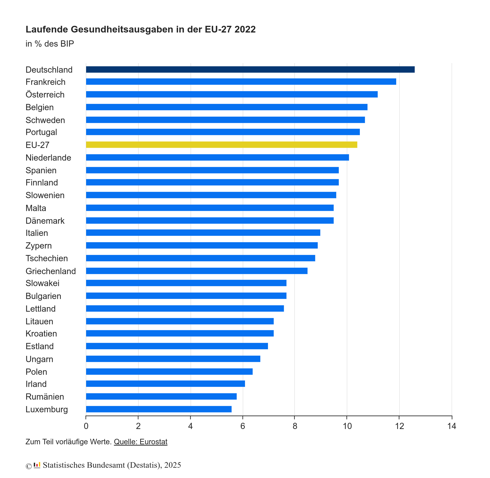

Aktuell erhöhen sehr viele Krankenkassen ihre Beiträge. Das wird aufgrund des steigenden Durchschnittsalters der Bevölkerung und des kleiner werdenden Anteils der Arbeitenden an der Bevölkerung auch in Zukunft so weitergehen, wenn wir nichts machen.
Wir haben noch andere Probleme in der Krankenversorgung, wie z.B. die Verfügbarkeit von Apotheken und Hausärzten auf dem Land. Aber in diesem Artikel möchte ich mich auf die Kosten konzentrieren.
Aktuelle Krankenversorgung in Deutschland
Deutschland im Vergleich
Wenn wir beurteilen wollen, wie teuer das deutsche Gesundheitssystem ist, müssten wir im Ländervergleich auf kaufkraftbereinigte Kosten pro Kopf schauen. 2012 war Deutschland ein gutes Stück günstiger als Norwegen, die Schweiz und die Niederlande. Die kaufkraftbereinigten Gesundheitsausgaben pro Kopf waren vergleichbar mit Österreich, Dänemark und Belgien. Ein gutes Stück günstiger waren Finnland, Island, Italien, Ungarn und Polen.
Schauen wir uns Zahlen von 2022 an und betrachten die Gesundheitsausgaben in % vom BIP, sehen wir, dass Deutschland mit 12,61% stark über dem Durchschnitt liegt.
{kind=link}

Diese 12,61% des BIP sind 488,7 Milliarden Euro. Davon waren 4,1 Mrd EUR für Corona. In der Corona-Pandemie kaufte der Bund 5,7 Milliarden Corona-Masken für 5,9 Milliarden Euro. [...] Mehr als die Hälfte wurde nicht gebraucht und daher vernichtet. (Quelle). 13,1 Milliarden Euro wurden für Impfdosen ausgegeben (Quelle).
Im Jahr 2021 beliefen sich die Kosten deutscher Krankenhäuser auf insgesamt rund 109,3 Milliarden Euro (Quelle).
Privat vs. gesetzlich
Es gibt 95 gesetzliche Krankenversicherungen (Quelle, Stand: 1. Januar 2024). Über die Jahre werden es weniger. Aktuell ist die Techniker Krankenkasse mit 11,8 Millionen Versicherten die größte gesetzliche Krankenkasse, die Barmer Ersatzkasse ist mit 8,5 Millionen Versicherten die zweitgrößte.
Insgesamt sind 75 Millionen Menschen in Deutschland gesetzlich krankenversichert (Quelle). Privat vollversichert sind insgesamt rund 8,7 Millionen Menschen, darunter:
Ausgaben der Krankenkassen
Krankheitskosten laut Robert Koch Institut (RKI) (Stand 2006):
- Im Jahr 2006 wurden in Deutschland für den Erhalt der Gesundheit und die Linderung von Krankheitsfolgen [...] 236 Milliarden Euro [ausgegeben].
- Die höchsten Kosten entstanden durch Krankheiten des Kreislaufsystems mit insgesamt 35,2 Milliarden Euro
- An zweiter Stelle mit 32,7 Milliarden Euro stehen die Kosten für Krankheiten des Verdauungssystems (insbesondere Zahnkaries).
- Den dritten Rang bei den Kosten für Krankheitsklassen nehmen psychische und Verhaltensstörungen mit 26,7 Milliarden Euro ein. Fast gleich hoch waren die Ausgaben für Krankheiten des Muskel-Skelett-Systems.
- Ein Zehntel der Krankheitskosten entstanden in Pflegeeinrichtungen
Krankheitskosten laut Statistischem Bundesamt (Stand 2022): Gesamt: 432 Mrd EUR
- 13% Krankheiten des Kreislaufsystems: Koronare Herzkrankheit, Herzinsuffizienz, Schlaganfall
- 13% Psychische Krankheiten und Verhaltensstörungen: Depressionen, Suchtkrankheiten wie Alkoholabhängigkeit, Demenzen
- 11% Krankheiten des Verdauungssystems: Lebererkrankungen, entzündliche Darmerkrankungen, Gastroösophagealer Reflux, Zahnkaries
- 10% Neubildungen: Insbesondere Krebs
Mögliche politische Maßnahmen
Kurz und gut:
- Einheitliche Krankenversicherung: Mehr Menschen in der gesetzlichen Krankenversicherung führt zu größerer Solidarität und geringeren Kosten. Jeder sollte Zugang zu einer guten Krankenversorgung haben und jeder sollte Interesse daran haben, dass dieses System funktioniert.
- Schädlichen Konsum reduzieren: Alkohol, Tabak und Zucker sind schädlich und verursachen hohe Kosten. Wir sollten den Konsum senken.
Gesetzliche Pflichtversicherung
Wenn alle Bundesbürger gesetzlich versichert wären, würde die gesetzliche Krankenversicherung jährlich ein finanzielles Plus in Höhe von rund neun Milliarden Euro erzielen (Quelle).
Man könnte § 6 SGB V Absatz 1 (nicht jedoch 1a), 2, 3, 4, 5, 6, 7 streichen. Damit müssten sehr viele Menschen in die gesetzliche Krankenversicherung eintreten. Sie dürfen immer noch privat zusätzlich versichert sein. Gleichzeitig müsste man ggf. Förderungen für Selbständige einführen, weil der Schritt in die Selbständigkeit nicht sofort finanzielle Sorgen wegen der Krankenversicherung verursachen soll. Als Gesellschaft liegt es in unserem Interesse, dass Menschen Firmen aufbauen.
Man könnte sehr einfach die Jahresarbeitsentgeltgrenze (JAEG) abschaffen oder drastisch erhöhen. Das würde dazu führen, dass alle Angestellten nicht mehr aus der gesetzlichen Krankenversicherung austreten können.
Genauso könnte man für neue Beamte die Möglichkeit des Ausscheidens aus der gesetzlichen Krankenversicherung abschaffen.
Praktisch gesehen würde ich die Menschen, die bereits aus der gesetzlichen Krankenversicherung ausgetreten sind, nicht zurückholen. Mir, als Laie, ist nicht klar, wie das gerecht umgesetzt werden sollte. Aber den Austritt weiterer kann man sehr einfach verhindern.
Alkohol- und Tabakkonsum senken
Der Staat muss einen Spagat machen: Einerseits muss er die Bürger schützen, andererseits darf er nicht zu sehr in die Freiheit der Bürger eingreifen. Ich bin kein Fan von absoluten Konsum- oder Produktionsverboten. Ich glaube nicht, dass Prohibition funktioniert und ich bin davon überzeugt, dass sie andere Probleme verursacht. Einschränkungen, die den Erwerb erschweren und die Verbreitung reduzieren, sie aber immer noch legal erlauben, halte ich daher für sinnvoll.
Die durch Alkoholkonsum verursachten volkswirtschaftlichen Kosten betragen rund 57 Milliarden Euro pro Jahr (Quelle)
Zum volkswirtschaftlichen Schaden gehören allerdings nicht nur die Kosten für die Krankenversorgung, sondern auch die Kosten für die Polizei, die Justiz und die Ausfallzeiten. Dennoch sollte klar sein, dass es sich lohnt, den Alkoholkonsum zu senken.
Zynikern sei an der Stelle gesagt: 2023 hat der Bund nur 2,2 Milliarden Euro durch die Alkoholsteuer eingenommen (Quelle). Es lohnt sich also definitiv nicht.
Was könnten wir machen?
- Regulierung von Verkauf und Verfügbarkeit: Alkohol ist weit verbreitet und in Supermärkten, Tankstellen und Kiosken leicht zugänglich. Einschränkungen in der Verkaufszeit oder -mengen könnten Wirkung zeigen. In Norwegen wird Alkohol nur in staatlich kontrollierten Geschäften (Vinmonopolet über 4,75%) verkauft, die eingeschränkte Öffnungszeiten haben. In Schweden gibt es ein Alkoholmonopol (Systembolaget), das den Verkauf von Alkohol über 3,5% regelt. In Deutschland könnten wir zumindest den Verkauf von Alkohol an Tankstellen verbieten - wir wollen ja keine betrunkenen Fahrer. Auch der Verkauf von alkoholhaltigen Getränken über 4,75% nach 20 Uhr könnte verboten werden, um den Spontankauf zu erschweren.
- Preispolitik: Eine höhere Alkoholsteuer könnte den volkswirtschaftlichen Netto-Schaden reduzieren, indem die Einnahmen erhöht werden und der Konsum sinkt. In Deutschland ist Alkohol vergleichsweise günstig; in Skandinavien gibt es hohe Alkoholsteuern und ein Mindestpreis für Alkohol wurde in Schottland eingeführt.
- Werbeverbot: Weil der volkswirtschaftliche Schaden durch Alkohol so hoch ist, sollte es ein absolutes Werbeverbot für Alkohol geben. Keine Werbung im Fernsehen, Radio, Internet, Reklame auf Plakaten. Die Verpackungen und Flaschen sollten verpflichtend in schlichtem Design gehalten sein, z.B. eine braune Flasche mit schwarz-weißem Etikett. Warnhinweise auf den Verpackungen ähnlich wie bei Zigaretten sollten auf die Probleme übermäßigen Alkoholkonsums hinweisen. Das hätte auch einen Einfluss auf die Art, wie wir Volksfeste, insbesondere das Oktoberfest, bewerben.
Für das Rauchen gilt Ähnliches:
Die gesamtwirtschaftlichen Kosten, die auf das Rauchen zurückgehen, belaufen sich in Deutschland jährlich auf 97,24 Milliarden Euro. Die direkten Kosten (z.B. Kosten für die Behandlungen tabakbedingter Krankheiten, Arzneimittel etc.) des Tabakkonsums betrugen 30,32 Milliarden Euro. Auf die indirekten Kosten (z.B. Produktivitätsausfälle) entfielen 66,92 Milliarden Euro. (Quelle, Stand: Januar 2024)
Und auch hier sei Zynikern gesagt: Der Bund hat 2023 nur 14,7 Milliarden Euro über die Tabaksteuer eingenommen (Quelle)
Bei den Maßnahmen sehe ich allerdings weniger Spielraum als bei Alkohol:
- Regulierung von Verkauf und Verfügbarkeit: Den Verkauf von Zigaretten würde ich an Automaten verbieten, da die Alterskontrolle dort nur über eine Karte erfolgt und leicht umgangen werden kann.
- Preispolitik: Die Steuern auf Tabak sind schon relativ hoch. Es ist jedem absolut klar, dass Rauchen teuer ist.
- Werbeverbot: Die Verpackungen sind bereits sehr schlicht und haben abschreckende Bilder. Deutschland hat bisher nur ein schrittweise eingeführtes Werbeverbot (z.B. Außenwerbung für Zigaretten seit 2022). Werbung am Verkaufsort ist weiterhin erlaubt. Das sollten wir ausweiten.
Siehe auch:
- aerzteblatt.de: Tabakwerbeverbot beginnt schrittweise ab 2021, 2020.
Zuckerkonsum senken
In Deutschland sind 19% von Adipositas betroffen. 2012 wurden 52,5 Millionen Zahnfüllungen durchgeführt. Beides kann man nicht ausschließlich auf den Zuckerkonsum zurückführen, aber er spielt eine Rolle.
Es ist schwer, in Deutschland den Zuckerkonsum zu senken, weil Zucker in vielen Lebensmitteln enthalten ist. Wir sollten die Rahmenbedingungen so gestalten, dass es leichter ist, sich gesund zu ernähren. Lebensmittelhersteller sollten ein Interesse daran haben, gesunde Lebensmittel zu produzieren.
Preispolitik könnte hier auch eine Rolle spielen:
Die Zuckersteuer könnte für die Jahre 2023-2043 Einsparungen von 16 Mrd. Euro volkswirtschaftliche Kosten bringen, davon rund 4 Mrd. für das Gesundheitssystem (Quelle)
Der Gedanke ist nicht, dass wir Süßigkeiten unbezahlbar machen oder verbieten. Die Idee ist, dass Hersteller ihre Kosten senken wollen. Wenn es also Süßmacher wie Stevia oder Erythrit gibt, die dank einer Zuckersteuer günstiger sind, werden sie hoffentlich weniger Zucker verwenden. Oder den Zusatz ggf. sogar komplett weglassen. Insbesondere bei Softdrinks könnte das eine Rolle spielen.
Ein Werbeverbot für Süßigkeiten und Softdrinks könnte auch sinnvoll sein. Wir sollten nicht dafür sorgen, dass Eltern von ihren Kindern um Süßigkeiten angebettelt werden.
Weiteres:
- Mehrere Bundesländer fordern Softdrink-Steuer auf tagesschau.de, 2024.
- Zucker-/Fettsteuer: Die Positionen der Parteien auf aerztezeitung.de, 2016.